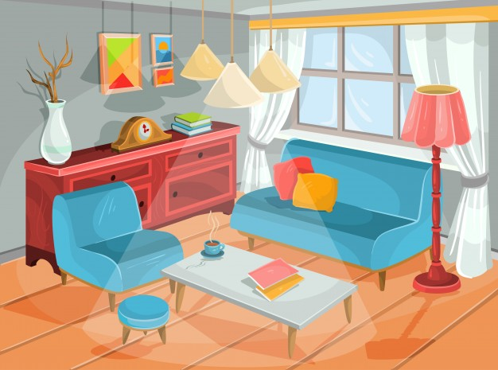
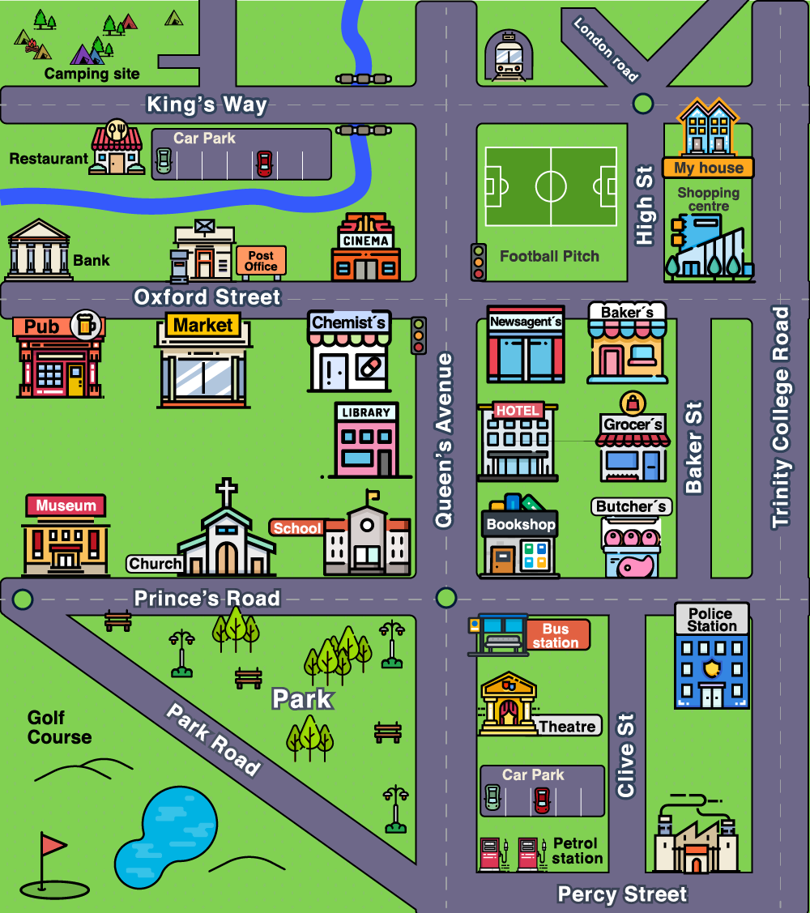

Una guía paso a paso para preparar y contestar tus Actividades integradoras 3 y 4. Aprende el tema, practica con ejercicios, ensaya tu pronunciación con el micrófono y arma tus respuestas.

Di dónde están los objetos de la casa con There is / There are y las preposiciones de lugar.
Abrir Actividad 3 →
Explica cómo llegar de un lugar a otro en el mapa con instrucciones claras y en orden.
Abrir Actividad 4 →